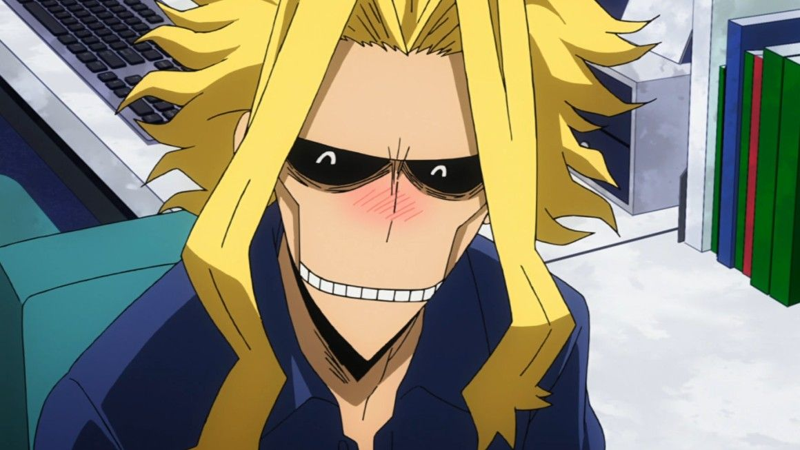
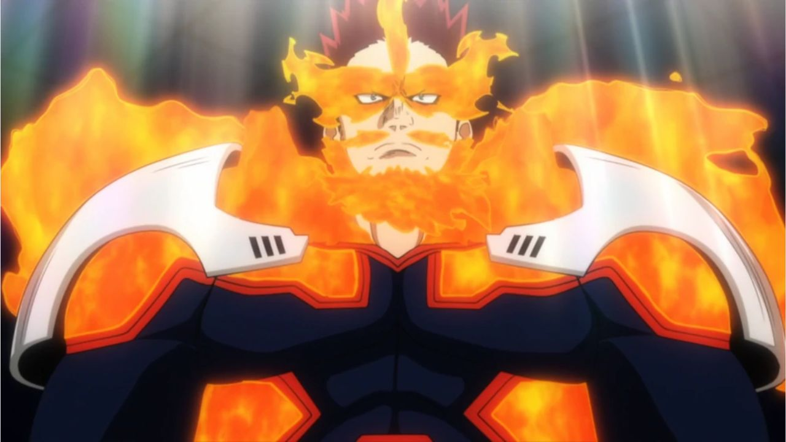
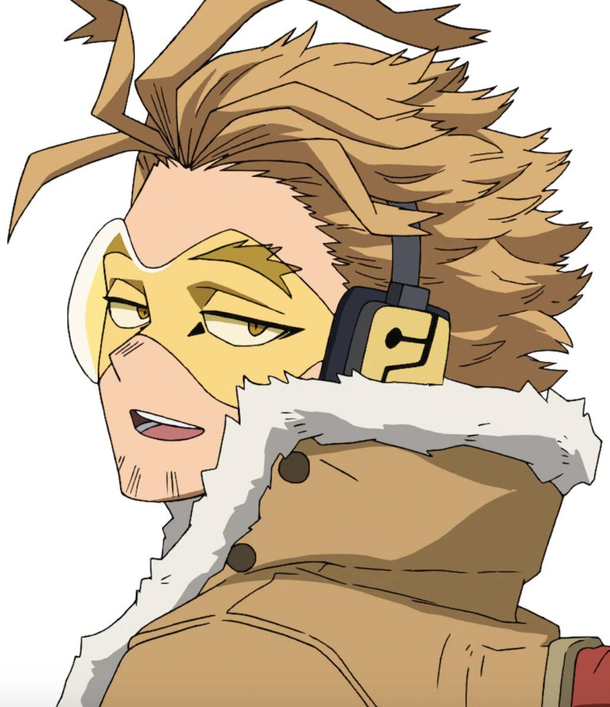
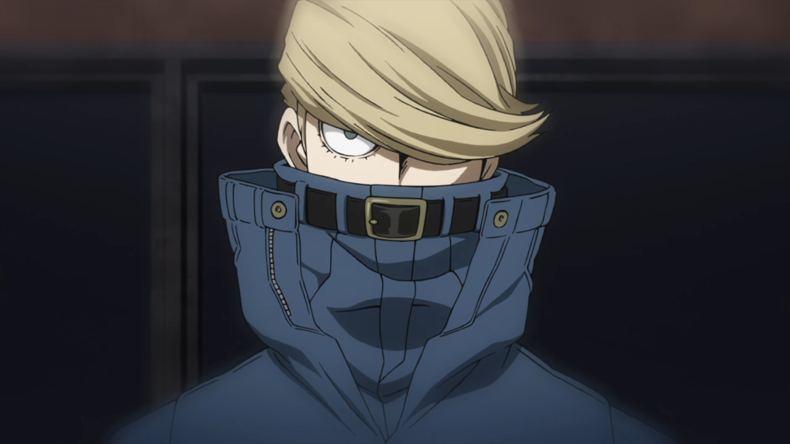

Герои МИРА
Топ 3 лучших героев
(Бывший) Герой номер 1
Тошинори Яги

Тошинори Яги (八や木ぎ俊とし典のり Yagi Toshinori Yagi Toshinori), более известный, как Всемогущий (オールマイト Ōrumaito) — один из главных персонажей манги и аниме, а также бывший профессиональный герой №1. На данный момент обучает начинающих героев в Юэй.
Всемогущий стал восьмым обладателем Один за Всех после того, как получил эту Причуду от своего наставника Наны Шимуры. Через многие годы он передал свою Причуду Изуку Мидории, которого он стал тренировать, чтобы сделать своим преемником.Являлся героем номер 1
Причуда: Беспричудный (при рождении)
Один За Всех (ранее)
Беспричудный (на данный момент)
Герой номер 1
Энджи Тодороки

Энджи Тодороки (轟とどろき炎えん司じ 'Todoroki Enji') (Эндзи Тодороки в официальном русском издании), более известный, как Пламенный Герой: Старатель (フレイムヒーロー エンデヴァー Fureimu Hīrō Endevā) (Неукротимый в официальном русском издании)[2] — профессиональный герой с наивысшим числом раскрытых дел в истории и отец Шото Тодороки.После отставки Всемогущего, временно занял место Героя №1 после долгого пребывания в роли Героя №2. После объявления Биллборд Чарта Японских Героев официально стал Героем №1.
Причуда: Адское пламя
Герой номер 2
Кейго Таками

Кейго Таками (鷹見啓悟たかみけいご Takami Keigo), более известный, как Крылатый герой: Ястреб (ホークス Hōkusu), бывший Профессиональный Герой №3 и текущий Герой №2.Ястреб беспечный, общительный и не переносит формальности, часто действует спонтанно и непредсказуемо, при этом ведя себя нахально и насмешливо. Он считает, что одобрение общества - самый важный критерий оценки Профессиональных Героев, и, видимо, не воспринимает официальный рейтинг всерьёз, отдавая предпочтение более низким рангам, поскольку это позволяет действовать более свободно и освобождает от бремени Героя №1.
Причуда: Несокрушимые Крылья
Герой номер 3
Цунагу Хакамата

Цунагу Хакамата (袴田はかまだ維つなぐ Hakamata Tsunagu), (Цунагу Хакамада в официальном русском издании) также известный как Герой Нитей: Бест Джинс (ファイバーヒーロー ベストジー二スト Faibā Hīrō Besuto Jīnisuto) (Лучший Джинсист в официальном русском издании), бывший №4, сейчас Профессиональный Герой №3 и обладатель премии "Лучший Инженер" за последние восемь лет. Учился вместе с Героем-ниндзя: Метким Стрелком.
Причуда: Повелитель нитей